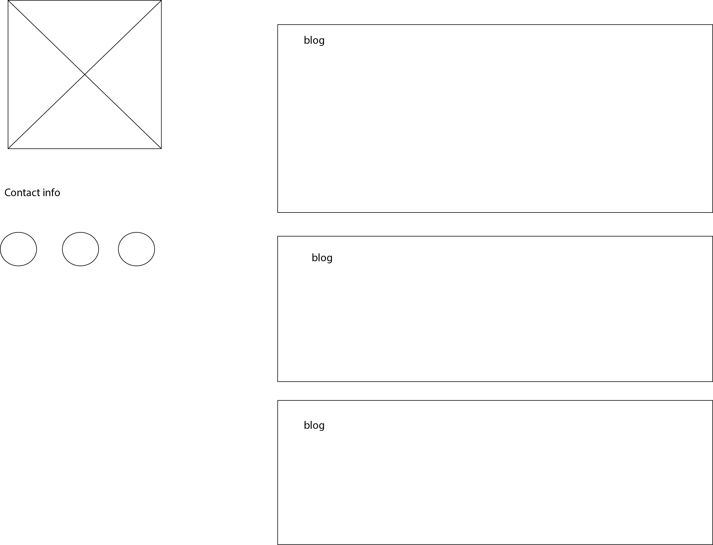
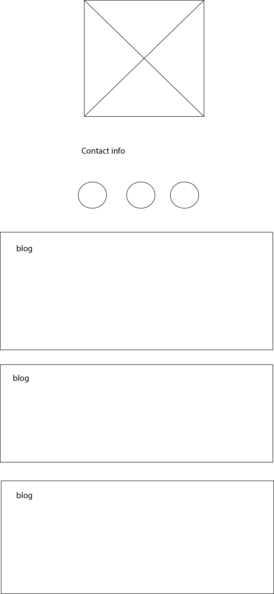

Nicolette Chambers
About
This is my first blog post
Read all about me coding adventures
This is my second blog post
Read all about me coding adventures
Web Wireframe Mockup

Mobile Wireframe Mockup
